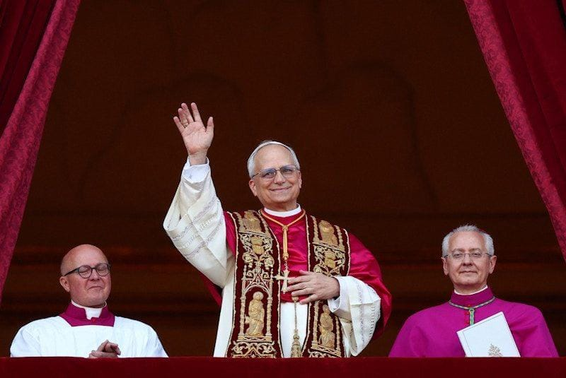

世界苦茶05月09日新闻 | 33条 | 史上第一位美国教皇当选

史上第一位美国教皇当选 | 美国英国达成关税协议 | 印巴继续互相以无人机与导弹攻击 | 习近平普京批判军国主义纳粹主义 | 比尔盖茨承诺捐出全部财富
透明茶室
苦茶数据
美元兑人民币：7.24（昨日7.23，前日7.22）
美元兑日元：145.59（昨日143.56，前日143.09）
上证指数：3346（昨日3342，前日3336）
标普500指数：5663（昨日5631，前日5606）
比特币：102608（昨日98566，前日96818）
布伦特原油：63.20（昨日61.43，前日62.51）
中国新闻
• 中日船只钓鱼岛对峙 ：中国海警通报，有日本渔船现身钓鱼岛周边海域，中国海警对渔船警告驱离。中国海警官方微信公众号星期四公布，日本“狮子”号渔船5月7日至8日进入钓鱼岛周边被视为中国领海的海域，中国海警舰艇对其采取必要管控措施并警告驱离。据日本共同社报道，日本第11管区海上保安总部星期四则称，有两只中国海警局船于星期三驶入尖阁诸岛周边被视为日本领海的海域，且目前继续在该海域内逗留。这是中国公务船连续两天驶入该海域，为今年第13天。
• 国防部警告菲律宾 ：中国国防部发言人向菲律宾喊话，提醒菲方停止侵权挑衅、停止以任何方式冲撞中方核心利益。据此前报道，山东舰航母4月底在菲美“肩并肩”军演期间出现在菲北部海域。有分析认为这可能是对菲美军演，或是对菲方巡逻舰进入黄岩岛，菲称斯卡伯勒浅滩水域的回应。此外，菲海军发言人也声称，菲军方与台湾方面目前距联合演练仅一步之遥。据中国“国防部发布”官方微信公众号的消息，国防部发言人张晓刚星期四回应说，山东舰航母编队在相关海域执行年度训练任务，进一步检验提升航母编队体系作战能力，符合国际法和国际惯例，不针对特定国家和目标。
• 中柬将举行联合军演 ：中国和柬埔寨军队将于本月下旬举行“金龙-2025”联合演习。据中国国防部网站，国防部新闻发言人张晓刚星期四下午发布这一消息。张晓刚说，5月中下旬，中柬两军在柬举行“金龙-2025”联合演习，以联合反恐和人道主义救援行动为课题，区分海空、陆空方向组织，并开展文体交流、舰艇开放等活动。
亚太印太新闻
• 台争取赖清德出席教宗礼 ：台湾外交部在立法院应询时表示，将全力争取让总统赖清德出席新教宗的就职典礼。罗马天主教前教宗方济各4月21日在罗马病逝，4月26日在安葬于罗马圣母大殿。梵蒂冈目前正举行选出新教宗的枢密会议。5月8日凌晨3时许，西斯廷教堂烟囱冒出黑烟，首日枢机秘密会议未能选出新教宗。据台湾《联合报》报道，民进党立委陈俊宇星期四在立法院外交及国防委员会关切总统赖清德是否有机会亲自参加新教宗就职仪式，台外交部政务次长陈明祺应询时说，外交部与教廷保持良好沟通，台方参与人选由总统府决定，外交部将配合，并尽力争取，完成赖清德所交付的使命。外交部也将全力争取，让赖清德能出席新教宗的就职仪式。
• 赖清德谈欧战教训 ：台湾总统赖清德在星期四，即纳粹德国投降满80年提出，珍视和平就不能坐视侵略，并称欧战当年全面爆发，正因为对侵略行为掉以轻心。据台湾《联合报》报道，赖清德在台湾外交部举办的欧战胜利80周年纪念茶会上说：“历史告诉我们，无论用什么理由或意识形态，以武力侵略其他国家，都是不正义的罪行，而且必定失败；团结捍卫家园与自由民主的伙伴，终将会获得胜利。”赖清德指威权和侵略只会带来杀戮、悲剧，以及更多的不平等，并提出珍视和平，就不能坐视侵略。他说：“欧战的爆发，固然与威权政权的扩张野心有关，但欧战的全面爆发，更因为我们对侵略行为掉以轻心。”
• 韩朝代表联合国交锋 ：联合国安理会星期三在纽约总部召开会议，讨论朝俄军事合作等有关方违反安理会对朝制裁的问题。据韩联社报道，韩朝代表在会上激烈交锋。韩国常驻联合国代表黄浚局指出，在安理会朝鲜制裁委员会专家小组解散的情况下，朝鲜旨在研发核导武器的非法行为日趋严重，包括出口煤炭和铁矿、转移武器、窃取加密货币，以及向海外派遣劳务和兵力等。
• 朝鲜发射短程导弹 ：韩国联合参谋本部通报，朝鲜星期四上午从元山一带向东部海域发射多枚疑似短程弹道导弹。韩联社报道，韩国军方密切关注朝方动向，同美日交流朝鲜射弹信息，并保持高度戒备。这是朝鲜时隔近两个月再次发射弹道导弹，也是自美国总统特朗普1月开启第二任期以来第二次射弹。
• 印巴冲突致死伤 ：巴基斯坦三军新闻局5月8日称，印度当天向巴基斯坦发射多架以色列制造的无人机，造成至少2名平民死亡、1人受伤。29架无人机被击落。一架无人机破坏了拉合尔市附近的一个军事基地，造成4名士兵受伤。印度国防部称，袭击目标是巴基斯坦多地的防空雷达和系统。印度指责巴基斯坦在克什米尔地区印巴实际控制线上使用导弹和无人机与“一些军事目标交战”。印度还下令在与巴基斯坦接壤的旁遮普邦古尔达斯布尔地区进行夜间停电。巴基斯坦称其在控制线的交火中杀死40至50名印度士兵。但巴基斯坦否认对印度旁遮普邦发动任何袭击，认为这是印度试图煽动反巴基斯坦情绪。两名美国官员称，巴基斯坦使用中国制造的歼-10战机向印度战机发射空对空导弹，击落了至少2架印度战机，其中一架为法国制造的阵风战斗机。
• 印巴冲突航班改道 ：印度与巴基斯坦之间的冲突升级，香港国泰航空表示，旗下客机将避飞巴基斯坦空域。综合香港中通社和星岛环球网报道，受印巴冲突升级影响，多家航司宣布调整航线，部分更取消航班。国泰航空星期三说，国泰经常检视受关注地区的空域，以确保所有航班的航道运作安全。国泰客运航班将不会使用巴基斯坦空域，而货机航班则已于4月底起暂停使用该空域。国泰强调，航空公司一切决定，均以保障乘客和机组人员的安全为目标。
• JD 万斯称美国不会介入印巴争端，这与我们无关： 在印度和巴基斯坦紧张局势加剧之际，美国副总统 JD 万斯周四排除了美国直接干预的可能性，并表示持续的冲突“与美国无关”。万斯在接受福克斯新闻采访时强调，虽然美国会鼓励通过外交手段缓和局势，但不会采取军事行动。“我们能做的就是努力鼓励这些人稍微缓和局势。但我们不会介入这场战争，因为这根本就与我们无关，也与美国控制战争的能力无关。”副总统说道。
• X 表示，印度政府已要求其屏蔽 8000 个账户，其中包括全球新闻机构的账户： 埃隆·马斯克支持的社交媒体平台 X 表示，印度政府已要求其屏蔽约 8000 个账户，其中包括知名用户和国际新闻机构的账户。该公司在一份声明中表示，这些屏蔽命令中“相当一部分”是在没有证据或明确理由的情况下发布的。虽然 X 表示不同意政府的指令，但为了确保印度用户能够正常访问，它将遵守这些指令。
科技新闻
• 苹果研发智能眼镜芯片 ：苹果公司的晶硅设计团队正在研发全新的芯片，这些芯片将成为未来设备的大脑，包括其首款智能眼镜、功能更强大的Mac和人工智能服务器。知情人士透露，苹果公司在为智能眼镜开发芯片方面已取得进展。苹果目前正在开发的其他芯片还将用于未来的Mac电脑，以及为苹果智能平台提供支持的人工智能服务器。苹果首款智能眼镜的芯片基于Apple Watch所用芯片，功耗远低于iPhone、iPad和Mac等设备所用的处理器。该芯片已进行定制化设计，移除了部分组件，以提升能效。此外，芯片还被设计用于控制计划用于眼镜的多个摄像头。苹果计划在明年底或2027年开始量产该芯片。如果研发顺利，这款眼镜产品可能将在未来两年内上市。
• Meta开发超级感知功能 ：Meta 公司正在开发一种被称为“超级感知”的视觉软件，可以通过名字识人脸。该公司正在研发明年推出的两款智能眼镜，内部代号为 Aperol 和 Bellini，并且最近重新调整了评估隐私和安全风险的流程，以更快地发布产品。除了面部识别之外，Meta的人工智能软件最终还可以做一些事情，比如如果它看到你没拿钥匙，会提醒你拿钥匙，或者在您走回家时提醒您购买杂货。超级感应功能使摄像头和传感器始终保持开启状态，以便人工智能能够跟踪你的所有活动。Meta已在已发布的型号上测试实时人工智能。然而，这会将电池续航时间缩短至仅三十分钟。
• Meta高层承认TikTok胜出 ：在周一公布的美国联邦贸易委员会对Meta提起的反垄断诉讼文件中，Meta首席执行官马克·扎克伯格、Instagram 负责人亚当·莫塞里和其他Meta高管认为TikTok在自己擅长的领域中击败了Meta。这份日期为2022年2月的文件包含多位Meta公司高管讨论Facebook以及 Instagram 战略及市场地位的对话。扎克伯格在其中一条消息中称Facebook是一个挑战者，已经失去了市场份额和增长势头。他还补充说，TikTok创造了一种 “共同语境” 的感觉，朋友们可以看到相同的梗。莫塞里指出Facebook不再是默认的内容发现引擎。他认为如今首选的发现引擎可能是 YouTube 平台，但根据Meta掌握的数据，他预计TikTok最终会超越这个谷歌公司旗下的视频平台。
• 高管称iPhone恐走iPod路 ：苹果公司服务高级副总裁埃迪·库今日发出不祥警告：iPhone可能会在10年后走上iPod的老路。库伊是在今日的谷歌搜索反垄断补救措施审判期间发表上述言论的，当时他讨论了人工智能如何有潜力重塑科技行业并为新进入者打开大门。现有企业很难……我们不是石油公司，我们不是牙膏 —— 这些东西会永远存在……十年后你或许不会需要iPhone。库伊继续说道，苹果做的最好的事情就是砍掉了iPod，他称此举非常大胆。库伊称AI是一次 “巨大的技术变革”，并暗示这种变革可能会让曾经看似不可动摇的公司变得谦卑。
财经新闻
• 美一季度生产率下滑 ：美国第一季度劳动生产率出现近三年来首次下降，因经济产出下滑，这结束了此前有助于缓解就业成本对通胀影响的连续效率增长。根据美国劳工统计局星期四公布的数据，生产率折合成年率下降0.8%，去年第四季度修正后为增长1.7%，第三季度修正为增长2.3%。去年全年生产率增长2.3％，除2020年以外，这是14年来的最高水平。单位劳动力成本在第一季度跃升5.7%，为一年来最大增幅。
• 美英达成关税协议 ：英国和美国定星期四宣布一项降低部分商品关税的协议。美国总统特朗普宣布，美国与英国达成贸易协议。这将是他发起全球关税闪电战以来，达成的首份此类协议。特朗普在其“真相社交”平台上发文称：“与英国达成的这项协议是一份全面的协议，它将在未来许多年巩固美英关系。”法新社引述他说：“鉴于我们悠久的历史和忠诚的合作关系，我们非常荣幸地宣布与英国达成协议。接下来，我们将陆续宣布许多其他协议，这些协议目前正处于认真的谈判阶段。”
• 丰田预计利润下滑 ：日本丰田汽车公司预计，受美国政府一系列关税政策拖累，2025财年净利润将同比萎缩34.9%。丰田星期四发布2024财年决算报告，其中业绩预测指出，2025财年净利润将大幅萎缩的主要原因，是美国相关关税政策的冲击及日元对美元升值的影响。新华社引述丰田说，美国相关关税政策已给企业业绩造成较大负面影响，预计今年4月和5月，丰田将损失销售额高达1800亿日元。另外，原材料价格上涨也给企业运营带来较大压力。
• 中拟整顿房屋预售 ：中国据报正考虑对全国范围内的房屋销售方式进行大幅度整治。彭博社引述不愿具名的知情人士报道，中国正考虑要求开发商只提供已竣工的房屋，而不再采用加剧住房危机的预售模式。知情人士称，这项尚未最终敲定的措施，是中央政府正在制定的房地产发展新模式的一部分。
• 商务部促美改关税 ：中国商务部对中美经贸会谈相关问题做出回应时强调，美国要拿出诚意、拿出行动。中国商务部新闻发言人何亚东星期四在新闻发布会上说，中国坚决反对美国滥施关税的立场是一贯的，美国想要通过谈判解决问题，就要正视单边关税措施给自身和世界带来的严重负面影响，正视国际经贸规则、公平正义和各界理性声音。何亚东呼吁美国拿出谈的诚意，“要在纠正错误做法、取消单边加征关税等问题上做好准备”，拿出行动，与中国相向而行，通过平等协商解决双方关切。
• 美英将宣布贸易协议 ：美国总统特朗普星期三说，他将在美东时间星期四上午10时在白宫举行记者会，宣布与一个大国达成的贸易协议。《纽约时报》随即引述消息人士报道，即将与美国达成协议的国家是英国。据《纽约时报》报道，三名消息人士透露，美国将与英国达成一项贸易协议，相关规划已在进行中。不过，目前白宫发言人和英国大使馆发言人皆未有回应。目前协议细节尚不清楚，双方讨论过的议题包括降低英国对美国汽车和农产品的关税，还有取消英国对美国科技公司的税额。
• 防务股因印巴局势上涨 ：与防卫装备生产有关的中企股价星期三上涨，原因是印度和巴基斯坦之间的边境紧张局势升级，据报提振中国大陆出口商的前景。彭博社报道，进口歼10C战斗机等大量防卫装备的巴基斯坦声称，击落了五架印度战机，其中包括一架法国阵风战斗机。由于巴基斯坦大量依赖此类武器进口，巴国的上述说法引发外界猜测，来自中国、用于防御的工具在此次冲突被部署。
• 关税冲击下中国4月出口同比增幅料急缩至1.9%，进口降幅扩至5.9% ：中国周五将公布4月贸易数据。路透综合逾30家机构预估中值显示，美国“对等关税”落地对外贸的冲击开始显现，中国4月以美元计价出口同比增幅预计大幅回落至1.9%；进口同比降幅料进一步扩大至5.9%；当月贸易顺差预计为890亿美元。
• 特朗普再次怒斥鲍威尔未降息，美英贸易协议令降息押注降温 ：特朗普再次批评美联储主席鲍威尔，称他是个 "傻瓜"，并抱怨美联储拒绝降息。特朗普说，降息将“像喷气燃料一样”推动经济发展，“但他不愿这么做。” 他还称鲍威尔“并不喜欢我”。特朗普称：“英国央行降了，中国降了，所有国家都在降，除了鲍威尔。”美联储本周继续按兵不动，对关税问题持 "观望 "态度。交易员押注周四公布的美英贸易协议意味着美联储降息次数减少。美国副总统万斯周四在接受福克斯新闻采访时表示，美联储主席鲍威尔“几乎在所有问题上都判断错误。”
• 英国央行降息至4.25%，决策者内部分歧严重出现三种立场 ：英国央行货币政策委员会以5:4的投票结果通过降息25个基点至4.25%，但特朗普的关税措施对经济增长的不确定影响导致决策者们意外出现三种不同的立场。委员丁格拉和泰勒支持以更大幅度降息，首席经济学家皮尔和外部委员曼恩希望维持利率不变。英国央行认为美国和其他国家增加关税将在一定程度上拖累英国经济增长，并推低英国通胀率，但强调前景依然不明朗。瑞典央行和挪威央行发出宽松信号，应对关税冲击。由于通胀放缓，全球大多数主要央行今年都在削减借贷成本，与通常是全球潮流引领者的美联储背道而驰，美国目前可能面临着全球贸易战导致国内通胀飙升的局面。
• 若无法通过谈判取消关税，欧盟考虑对950亿欧元美国商品出手反制 ：欧盟执委会表示，如果与华盛顿的谈判未能取消特朗普实施的一系列关税，欧盟考虑对价值高达950亿欧元的美国进口商品采取反制措施。欧盟执委会表示，他们还在考虑对价值44亿欧元的废钢和化工产品实施对美出口限制。执委会还称，将就美国关税向世界贸易组织提起申诉。
• 白宫幕僚长兼政策副部长斯蒂芬·米勒警告称，如果“目前的情况”继续下去，美国汽车工业可能在几年内消失： 特朗普政府于4月3日开始对进口汽车征收25%的关税，并计划于周六对某些汽车零部件征收25%的关税。但本周早些时候，特朗普签署了一项公告，对在美国组装汽车的公司给予为期两年的汽车零部件关税减免。“日本对我们的汽车关闭了市场。整个欧盟对我们的汽车关闭了市场。韩国对我们的汽车关闭了市场。”他在新闻发布会上说道，并强调了美国与这些国家在汽车贸易中存在巨大的贸易逆差。“这些国家本应是同等水平的国家——人均国内生产总值至少是相当的。因此，如果两个国家的人均GDP相近，那么从公平贸易的角度来看，汽车贸易流量如此不平衡是不可能的。”他补充道。
俄乌战争
• 中俄共倡国际秩序 ：中国国家主席习近平与俄罗斯总统普京举行会谈后共同见记者时说，中俄要坚持公平正义，做国际秩序的捍卫者。据人民日报客户端报道，习近平当地时间星期四上午在莫斯科克里姆林宫与普京会谈后共同会见记者。习近平指出，他刚同普京举行了深入友好、富有成果的会谈，达成许多新的重要共识。两人共同签署《中华人民共和国和俄罗斯联邦在纪念中国人民抗日战争、苏联伟大卫国战争胜利和联合国成立80周年之际关于进一步深化中俄新时代全面战略协作伙伴关系的联合声明》，见证两国有关部门交换多份合作文本，为中俄关系发展注入新的动能。
• 习普会晤批军国主义 ：俄罗斯总统普京星期四与到访的中国国家主席习近平会晤时强调，反对新纳粹主义和军国主义在当代的表现形式。习近平则说，中俄两国将坚决捍卫中俄两国及发展中国家权益。据俄国卫星通讯社报道，普京在莫斯科克里姆林宫与习近平举行会谈，形容习近平访问莫斯科具有重大意义，并说愿再次对中国进行正式访问。普京说：“感谢您邀请我参加抗日战争胜利暨二战结束80周年纪念活动。我将很高兴以此为契机再次对友好的中国进行正式访问。” （翻评：因为俄罗斯以反纳粹名义入侵乌克兰，最近国民党主席称民进党为纳粹，结合这个新闻，被人当作是给中共入侵台湾的理由，估计会极大影响最近的大罢免。）
• 美国或助力俄罗斯恢复对欧天然气供应 ：八位熟悉谈判情况的消息人士透露，欧洲与俄罗斯的能源关系遇冷之际，华盛顿和莫斯科的官员已展开讨论，商讨美国如何帮助恢复俄罗斯对欧洲的天然气销售。美国总统特朗普正在推动乌克兰和平，这提升了天然气关系解冻的前景。接近双边讨论的消息人士称，让莫斯科在欧盟天然气市场重新发挥作用有助于巩固与俄罗斯总统普京达成的和平协议。
其他新闻
• 美国枢机成新教宗 ：梵蒂冈西斯廷教堂的烟囱在当地时间周四傍晚冒出白烟，众枢机主教已在秘密会议中选出美国枢机主教罗伯·方济各·普雷沃斯特为第267任教宗，名号为“良十四世”。69岁的美国枢机主教普雷沃斯特当选新任教宗，据《纽约时报》报道，这是美国枢机主教首次出任教宗。普雷沃斯特出生于芝加哥，于2023年晋升为枢机主教。白烟于当地时间傍晚6时零7分从西斯廷教堂的烟囱升起，宣告新教宗已选出。白烟冒起之后的约一个小时，执事级首席枢机曼贝蒂出现在圣伯多禄大殿的中央阳台，以拉丁语宣布“我要向你们报告一个大喜讯，我们有教宗了”，以及新教宗的名号为教宗良十四世。教宗良接着出现在阳台，向信徒致意并颁赐他的第一个宗座降福——“降福罗马城和全世界”。
• 盖茨承诺捐出财富 ：美国科技企业家、盖茨基金会主席比尔·盖茨承诺，他将在未来20年内捐出几乎全部个人财富，在世界各国政府纷纷削减国际援助之际，他的基金会将为全球最贫困人口提供约2000亿美元的援助。这位69岁的亿万富翁、微软联合创始人和慈善家说，他正在加快剥离个人财富的计划，并在2045年12月31日关闭盖茨基金会。盖茨在网站上的一篇文章写道：“我死后，人们会说很多关于我的话，但我决心让‘他死时很富有’不成为其中之一。
• 软实力之父奈去世 ：美国哈佛大学肯尼迪政府学院星期三发公报宣布，学院前院长、美国知名政治学者约瑟夫·奈于星期二去世，享年88岁。约瑟夫·奈是“软实力”概念的提出者。约瑟夫·奈在1990年出版的《势在必成》一书中提出“软实力”的概念闻名，并用这一概念来描述国家所具有的除经济及军事外的第三方面实力，主要是文化、价值观、意识形态及民意等方面的影响力。公报说，约瑟夫·奈关于国际关系中权力本质的思想影响一代又一代的政策制定者、学者和学生。他在哈佛大学任教期间，发展“软实力”“巧实力”和“新自由主义”等概念。
• 4月为史上第二热 ：欧盟气候监测机构报告，2025年4月是自1940年有记录以来的第二热的4月份，仅次于2024年4月。根据哥白尼气候变化服务局星期四发表的最新报告，今年4月全球平均地表气温为14.96摄氏度，仅比去年同期低0.07摄氏度，比工业化前水平高出1.51摄氏度。数据还显示，今年4月是过去22个月中，第21个全球平均地表气温比工业化前水平高出1.5摄氏度以上的月份。